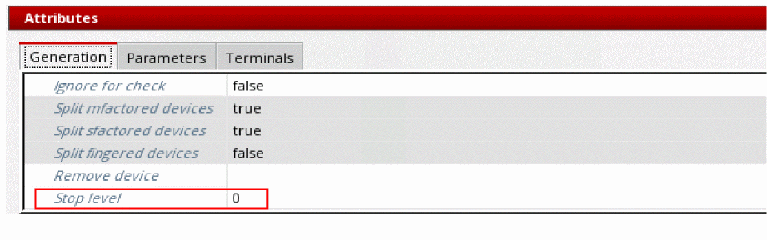

Setting the Instance Stop Level
The Stop level attribute controls the hierarchy level to which the selected instance will elaborate relative to the top level.
If an instance at level 1 and another one at level 2 are both set to a Stop level value of 5, both instances will elaborate to level 5 from the top.
The new stop level value takes effect the next time you generate or update the layout view.
To set the stop level for an instance using the Configure Physical Hierarchy window:
- In the Configure Physical Hierarchy window, click the Instances tab.
-
Select the row containing the instance for which you want to set the stop level.
The row is highlighted and the options in the Attributes pane are enabled. -
In the Generation tab, type the required Stop level value.
 - Choose File – Save to save the update.
The new Stop level value for the updated instance takes effect the next time you generate or update the layout view.
Related Topics
Configure Physical Hierarchy Window
Return to top